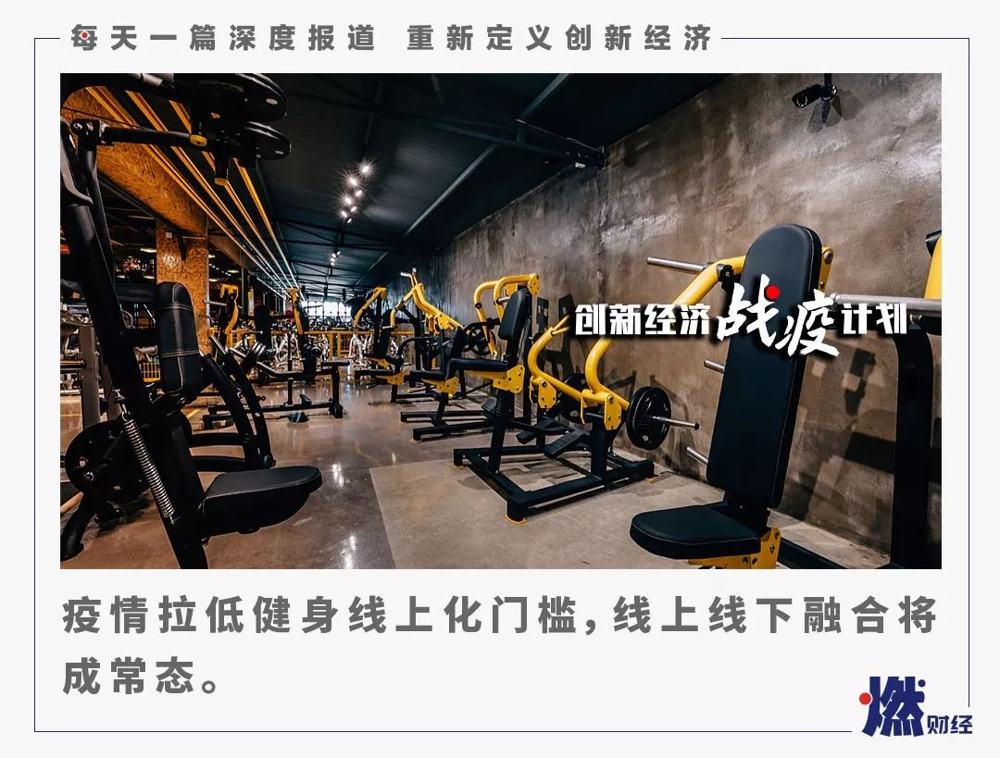

叶青武汉日记：第一个隔离点关闭了！
原文链接 备份链接 岛语 非常时期，武汉成了全国人民挂念、祈福的城市。封城后，武汉人民的真实生活是什么样？ 武汉在发生哪些变化？ 正和岛自1月26日起特别推出“叶青专栏”。叶青是一位定居武汉40年的市民，也是一名学者和官员。在过往多期的专 …

《创新经济战疫计划》，是燃财经在新型肺炎疫情期间推出的特别栏目，关注创新经济企业遇到的新难题、商讨应该采取的新对策，希望能够帮助中小企业一起战胜挑战、把握机会。
作者 | 唐亚华
编辑 | 魏佳
疫情下的健身行业，正在经历冰火两重天。
一边是月成本2000万、现金流撑不过50天的线下门店在生死边缘挣扎，另一边是巨大的健身需求带动纯线上公司日活、营收翻番，还有一些成本相对可控的品牌，选择用直播课等形式维护用户、宣传品牌，教练也开始尝试当起网红。
突如其来的疫情让2019年原本就进入洗牌期的健身行业雪上加霜，加速优胜劣汰与重塑行业格局已是定局。
多位行业内人士表示，疫情面前首先考验的是各家的现金流储备，这时候现金流不足的企业要想尽一切办法活下去，而情况乐观的企业应该趁势进攻，整合优质教练资源、占据优势点位将会比平时更容易。
对于急速爆发的线上直播等业态，更多受访者认为这会成为一种有效的引流宣传手段，而不会是主流服务模式和有效的商业模式。因为不管何种方式做线上尝试，都是一个继续投入的过程，而大部分直播都是免费或是低收费，短期来看对正向现金流的帮助并不明显。但疫情之后，线上线下的结合会形成新的竞争力，从业者也将面临新挑战。
***门店迎生死大考***
***“月成本2000万，现金流最多撑50天”***
曾经拥有75家线下健身房的高炎最近很焦虑。
他从业20余年，是连锁健身俱乐部黄金时代创始人兼CEO。鼎盛时期，黄金时代的75家店中，面积2000-3000平米、带游泳池的占到60%以上，主要分布在河南、江苏等省份。2019年，传统健身房遭遇倒闭潮，黄金时代也因业绩下滑超20%，优化关闭了20多家店。
按照高炎原本的规划，对人员、店面、业务优化之后，预计2020年业绩能有较好的回升，但突发的疫情让他措手不及。“我五六十岁了，从来没遇到过如此大规模的事件，起码有两个月几乎整个国家的造血机器陷于停滞，这对中国经济来说也算一场重感冒了。”高炎感慨。
他给燃财经介绍了公司的成本结构，员工最多时有2800多名，目前剩1800多名，整个公司人工成本约占45%，房租占15%-20%，毛利率在20%以下，每个月的硬性成本高达2000多万。如果在完全没有收入的情况下，最多能撑50天。“很多大咖说企业要留够3个月的现金流，我觉得这是‘饱汉不知饿汉饥’，民营企业能有超过3个月现金流的可能不会超过1%，今年预计还要收缩约10%的业务。”
疫情之下，很多线下业态都在转向线上，黄金时代也在开展线上直播课程，每天上3-4节课，近半个月有10-20万次浏览，吸引到新用户约3000人。
“线上课程给会员和员工都吃了一颗定心丸，但绝大多数企业做线上，目前还停留在客户维护、品牌宣传阶段，营销和销售是两个概念，营销要转变成真正的销售还需要时间。”高炎表示。
在这种形势下，高炎还在探索其他的自救方法。他一方面在协调房租减免事宜，另一方面也在呼吁有关部门关注健身行业水电气暖的收费标准。

图 / 视觉中国
“在用水用电上，我们被算在特殊服务用水里，和洗浴中心等高档消费在一档，比普通商业用水高出200%多，我们60%的店面都有游泳池，成本非常高。”高炎认为，这对健身行业不太公平，希望能在水和燃料费上享受和普通企业一样的标准，同时给予适当的补贴支持。
至于人事方面，高炎对员工很有信心。
“1998年亚洲金融危机时，我在经营一家外贸企业，当时人员流失比较多，留下来的员工主动要求降薪，现在回想起来，那么大的危机度过了，我相信现在也可以，”高炎说，“我们经营22年了，员工里有10%-20%是曾经的会员，中高层300多人都持有股份，我相信员工能和我们站在一起共度难关。当然，公司挺过来了不会亏欠任何一个人。”
据中体数据总经理、光猪圈健身联合创始人兼CEO刘易斯观察，春节之前，身边的同行还比较乐观，有一部分人认为，非典结束后健身行业迎来爆发，这次应该也有机会。但随着确诊病例逐渐增加，从业者们经历了从乐观到相对乐观，再到悲观的转变。不过，最近上层复工意图明显，健身产业很可能会提前恢复。
他认为，2019年健身行业本来就有一波洗牌，大约15%的门店因为过度竞争、经营不善而倒闭，这一波打击下，可能还会有20%的企业挺不住。“即使3月能逐渐复工，人员密集的健身房恢复也可能要到4月。但如果再往后推迟一个月，很多店的现金流就断了。湖北省预计6月份之前都不能正常经营，门店倒闭的现象会更多。”刘易斯表示。
***纯线上业务爆发***
***“日活营收均翻番，日新增4-5万用户”***
用户的时间是一定的，线下的暂时封锁让部分线上健身业态迎来爆发。
“疫情以来，我们的日活用户从之前的20多万涨到了最高时的57万，以前很多沉默用户也被唤醒，平均每天新增4-5万用户，最高峰时新增7-8万，营收也翻番了。”Wake创始人兼CEO熊明俊告诉燃财经。
Wake是一家线上瑜伽生态平台，最早做瑜伽知识付费课程，2019年7月，公司招募城市合伙人，增加了B2B2C模式，用内容赋能瑜伽馆。通俗来讲，Wake将平台上的课程包打包成年卡，卖给用户和城市合伙人，城市合伙人再卖给瑜伽馆和C端用户，城市合伙人的模式之下又有层层激励的推广变现机制。
熊明俊介绍，Wake的变现场景有两个。一个是线上家庭瑜伽教学，老师通过App完成线上社群瑜伽打卡答疑，视频互动教学；一个是线下实体瑜伽馆双师教学。上课内容用Wake APP里的课程投屏播放，瑜伽馆保留一到两个老师在现场指导，没办法天天去瑜伽馆的学员购卡后也可以跟着APP内容在家做瑜伽。

图 / 视觉中国
这样的模式对于瑜伽馆老板来说，降低了师资成本，还能赚一笔出售线上会员卡的钱。推出这一模式后，Wake触达了以前纯线上业务很难触达的三四线城市。
疫情发生后，大部分瑜伽馆暂时关停了，在家做瑜伽的需求剧增。在他看来，这次疫情让很多用户的健康意识包括对瑜伽的理念推进了3-5年的时间，“对我们来说是一个利好，短期数据表现很好之外，资本市场抛来橄榄枝。”
他预计，健身行业整体线下恢复应该在六七月份，现在这段时间是他认为要抓住的红利期，“目前公司全员都是配合移动办公，下一步的规划是完成新的数据积累、业务变现以及新一轮融资。”
*****开线上直播课自救*****
*****教练转型当网红*****
疫情除了让大型门店型健身房饱受打击、让线上模式迎来新机之外，还有中间地带。一些门店成本相对可控，但同样受到影响的企业正在通过直播健身、推出线上私教课等方式自救，一些教练尝试着当起网红。
据燃财经整理，目前Keep、超级猩猩、乐刻等互联网健身品牌的线下门店均暂时关闭，但各家都推出了线上直播课、训练营等线上业务。
乐刻方面表示，公司在抖音和快手上均上传了大量视频，截至2月11晚，乐刻做了39节直播课程，全平台观看量突破110万。
“我们没有预付费机制，而且去年已经实现了盈利，现金流也比较充足，短期来看，疫情将对我们门店的客流量、营收产生影响，但有观点认为疫情结束后，健身场馆将迎来一波健身热潮，我们对未来健身市场持乐观态度。”乐刻相关负责人告诉燃财经。
Keep聚焦平台方式，联合趁早App、Shape塑健身、每日瑜伽App 、lululemon及多位健身达人推出“假期运动直播大全”。从数据来看，取得了比较大的关注度，累计参与人数超过5千万，累计直播时常达到100小时，在线人数峰值为16万人。
“我们联合多家品牌的出发点是帮用户尽可能提供比较全的服务，目前是社会价值类项目，下一步直播会不会成为常态并且纳入商业化，还要去调研。”Keep公关负责人李若名对燃财经表示。
超级猩猩则推出了付费课程，“超猩家里蹲”过年期间的直播实时在线接近30万人，在一直播平台上热度排名第一；到2月10日，超级猩猩发布了付费课程产品“超猩家里蹲-14天‘陪’训营”，售价399元，已全部满员。按照每班上限30人、每人399元费用计算，约有26万余元收入。
在刘易斯看来，行业内风险较大的是两类型公司。一种是规模特别大的传统健身房，成本特别高，三个月没有收入公司就会倒闭，另一种类型是单店，房租、人力都很重的健身房，面临很大的问题。还有一些私教工作室，本身会员数就很低，短期内会员也不敢去健身房，再加上去年私教工作室已经开始行业洗牌，这一次对他们是双重打击。

图 / 视觉中国
但是，像超级猩猩、乐刻、光猪圈健身这一类型，总体成本并不高，人力成本基本上也是采用合伙人制，底薪压力也不大，应对风险能力较强。
如光猪圈健身目前有直营店有14家，加盟店140多家，据他介绍，由于其单店面积较小，硬成本约几万元，相对可控，教练采用合伙人制，待遇根据业务浮动。最大压力在于后台成本，公司研发、技术等共有140多个人，加起来一个月支出有几百万。
“线上尝试方面，一种是做线上活动，包括公益活动、大规模品牌性活动，目的是在向用户发声，加深会员的品牌意识，同时配合一些拉新手段，比如推荐客户可以赠卡；一种是教练转型去做网红；还有一种是针对教练的培训。”他表示。
他认为，做品牌活动是必要的，同时有适当的业务拓展也是合理的。他举例，长沙的一家健身公司做了一场4小时的云蹦迪活动，里面做了一些减脂产品的预售，开放了南京、长沙各60个名额，到结束就全卖掉了，据说收益有50万左右。但这种方式对一些私教课机构并不会有太大效果，而疫情下如“不健身病毒来了倒霉的就是你”之类的恐怖营销产生的则是负面效果。
综合来看，他认为这些线上动作最大的作用在于给客户传递一个心理上的支撑，告诉客户“我还很好，疫情结束后要关注自己的身体，回到我们的场馆里来锻炼 ”。

***加速优胜劣汰***
***线上线下结合会是常态***
长期关注运动健身行业的投资人动域资本黄一帆认为，这一次疫情会加速健身行业优胜劣汰的过程，健身行业自2018年开始出现拐点，2019年则表现得更为明显，行业正在从野蛮生长转向去伪存真的过程中，这个过程会被疫情加速，原本已经在竞争中处于劣势的企业会雪上加霜。
具体来说，疫情对各企业的影响主要是现金流层面，每年春节后是健身行业全年现金流最好的时间点之一，一些重销售的机构3月份能冲出半年的销售业绩，对于这样机构，疫情产生的影响更为致命。
但机遇和挑战总是并存，这次疫情也可能会为行业带来一些长期的正向影响。
黄一帆提到，疫情之下很多健身品牌开始尝试以线上的方式服务用户，以跑步机为例的家庭运动器材获得的线上流量有明显的提升；运动女装品牌“暴走的萝莉”的流量表现也非常好。“这反映了无论是出于健康意识提升还是在家中的空闲时间增多的原因，一些原来没有健身习惯的新用户已经被激活甚至转化了，疫情之后这部分用户还有可能成为线下健身服务的消费者。所以从需求端来分析，长期会有利好，会有反弹。”
图 / 视觉中国
那么，转型线上就容易吗？
黄一帆认为，线上服务并非是在疫情期间出现的新概念，过去的几年间一直有企业探索用线上方式服务用户，但仅依靠线上方式将一名小白用户教育成一个长期留存的健身用户的难度很大。
疫情拉低了用户教育成本，在当前环境下，无论新老用户，只要有健身需求，线上服务几乎成为了唯一的选择。“目前这些探索了线上服务方式的品牌，都有意愿在疫情结束后把线上服务方式继续下去。这其实是开辟了一个新的家庭场景为主的健身体验。”
不过，现在大部分直播都是免费的，线上私教与线上训练营等服务探索的收费也相对较低且以服务原有会员为主，短期来看不管何种方式做线上尝试，这反而是一个继续投入的过程，对正向现金流的帮助并不明显。但在他看来，线上的探索带来了老用户互动与新用户获客，品牌塑造和长期价值的好机会，会清晰地反映在疫情结束后品牌表现出的“后劲”上。
“这个时候现金储备充足的公司是积蓄力量准备加快发展的好机会，由于疫情造成的行业加速调整，一批优秀教练与优质商业地产位置可能被释放出来，对现金储备充足、竞争力强的品牌的后续扩张也会有利。”黄一帆说。
在刘易斯看来，这场疫情让以前很多不关注甚至抗拒线上的经营者，开始意识到线上的重要性，而且很多人会发现完整的体系对抗风险的能力大于单体，“疫情结束后，中国的健身产业可能会有一波整合，有的倒闭，有得归入一些大品牌下面，马太效应更强。”
更多人关心的是，火热的线上模式会成为主流还是昙花一现？
黄一帆认为，疫情结束后，线上部分不会成为主流的服务形式，而更可能成为线下服务的补充或是形成线上线下结合的综合服务方式。比如，原来每个月来线下上6次课，可能会变成2节线上课、4节线下课再结合自主训练打卡的新形式。未来线上线下结合会形成新的竞争力，也对从业者提出更多挑战。
*题图来源于视觉中国。“创新经济战疫计划”相关的深度报道、沙龙实录可点击公众号菜单“战疫计划”阅读。


你尝试线上健身了吗？体验如何？
欢迎在评论区留下你的故事，我们会在点赞前三（超过20个）的评论里挑选一位网友，送出网易云音乐季卡一张****。文章转载请点击公众号菜单“转载合作”。
一手资讯/硬核报告/每日红包/线下活动！就差你了！快加微信rancaijing02回复“读者”一键上车！


燃财经工作室
点个在看吧😘
微信扫一扫赞赏作者 赞赏
长按二维码向我转账
点个在看吧😘
受苹果公司新规定影响，微信 iOS 版的赞赏功能被关闭，可通过二维码转账支持公众号。
文章已于修改
原文链接 备份链接 岛语 非常时期，武汉成了全国人民挂念、祈福的城市。封城后，武汉人民的真实生活是什么样？ 武汉在发生哪些变化？ 正和岛自1月26日起特别推出“叶青专栏”。叶青是一位定居武汉40年的市民，也是一名学者和官员。在过往多期的专 …
原文链接 备份链接 所有的鱼现在同步在 allthefishnews.wordpress.com 更新并可通过邮件订阅。你可以复制上方链接浏览器打开获取订阅链接。 *点击 阅读原文 可查看昨天的推送 根据丁香医生实时数据，截至 2 …
原文链接 备份链接 《创新经济战疫计划》，是燃财经在新型肺炎疫情期间推出的特别栏目，关注创新经济企业遇到的新难题、商讨应该采取的新对策，希望能够帮助中小企业一起战胜挑战、把握机会。 作者 | 闫丽娇 编辑 | 周昶帆 刚刚过去的2月15 …
原文链接 备份链接 图片来源：unsplash 记者：伍洋宇 编辑：文姝琪 “ 健身行业的线上迁徙或许是一个临时逃生出口，但等到豁然开朗时，有几成创业者能伫立到最后？ ” 韩佳至始至终都没有提到最坏的可能，老板告诉她这次必须挺过去。 作为 …
原文链接 备份链接 图片来源：视觉中国 记者：罗盈盈 编辑：石一瑛 “ 疫情结束后，在线健身或许成为一个新战场。 ” 最近大半个月，黄晨跟着教练Mike做过燃脂训练，跟着Icey上过流动伸展课，还跟小雨老师一起练过马甲线。 只是，这一切都 …